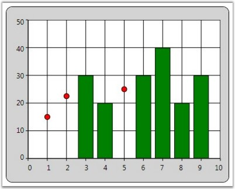

Essential Chart provides support for Empty Points. The data collection that is passed to the chart can have NaN or infinite values that will be considered as Empty Points. You can also hide the empty points by setting the ShowEmptyPoints property to false.
|
[XAML]
<syncfusion:ChartSeries Type="Column" Name="series1" EmptyPointInterior="Red" EmptyPointStyle="SymbolAndInterior" Interior="Green" IsIndexed="False" ShowEmptyPoints="True" Stroke="Black" StrokeThickness="1"/> |
|
[XAML]
// Display Empty Points. series1.ShowEmptyPoints = true;
// Set Empty Point style. series1.EmptyPointStyle = EmptyPointStyle.SymbolAndInterior;
// Set Empty Point symbol color. series1.EmptyPointInterior = Brushes.Red;
// Collection with Nan values. public IList products() { Random rand = new Random(DateTime.Now.Millisecond); List<product> productList = new List<product>(); productList.Add(new product() { ProdId = 1, Prodname = "Rice", Price = double.NaN, Stock = 3.5 }); productList.Add(new product() { ProdId = 2, Prodname = "Wheat", Price = double.NaN, Stock = 5.8 }); productList.Add(new product() { ProdId = 3, Prodname = "Oil", Price = 30, Stock = 2.1 }); productList.Add(new product() { ProdId = 4, Prodname = "Corn", Price = 20, Stock = 5.1 }); productList.Add(new product() { ProdId = 5, Prodname = "Gram", Price = double.NaN, Stock = 2.0 }); productList.Add(new product() { ProdId = 6, Prodname = "Milk", Price = 30, Stock = 1.5 }); productList.Add(new product() { ProdId = 7, Prodname = "Oil", Price = 40, Stock = 2.0 }); productList.Add(new product() { ProdId = 8, Prodname = "Corn", Price = 20, Stock = 2.5 }); productList.Add(new product() { ProdId = 9, Prodname = "Butter", Price = 30, Stock = 1.5 }); return productList; } |

Figure 97: Empty Points displayed in the Chart Control
Empty Point Symbol customization
This feature enables you to customize the marker for the empty point. You can differentiate the points using symbol or interior color. This support is available for all chart types except Fast chart type.
Property
Table 16: Propert Table
|
Property |
Description |
Type |
Data Type |
Reference links |
|
EmpyPointSymbolTemplate |
Used to apply user defined template for the empty point symbol. |
Dependency Property |
DataTemplate |
NA |
Customizing Chart Empty Point Symbol
You can customize the empty point symbol using the EmpyPointSymbolTemplate property. The following code illustrates this:
|
[XAML]
<!—Data Template for Empty point symbol--> <DataTemplate x:Key="EmptyTemp"> <Grid > <Rectangle Fill="Green" Margin="0,0,0,10" Width="10" Height="10" /> </Grid> </DataTemplate > <!— Adding Data Template for Chart series--> <syncfusion:ChartSeries Name="series1" Label="Profit" EmptyPointSymbolTemplate="{StaticResource EmptyTemp}"> |
Figure 98: Costomized Empty Point Symbol
Sample Link
To view a sample:
1. Open the Syncfusion Dashboard.
2. Select User Interface.
3. Click the WPF drop-down list and select Explore Samples.
4. Navigate to Chart.WPF\Samples\3.5\WindowsSamples\Chart Customization\
Empty Point Default Value
This feature enables you to specify the default value of the empty point. You can either set this as zero or the average of nearest value on the adjacent side.
Properties
Table 17: Property Table
|
Property |
Description |
Type |
Data Type |
Reference links |
|
EmptyPointValue |
Specifies whether empty point has to show zero or average value. |
Dependency Property |
EmptyPointValue |
NA |
Customizing the Default Value of the Empty Point
You can customize the default value of the empty point using the EmptyPointValue property.
Set the EmptyPointValue property to Zero, the default empty point value will be zero.
The following code illustrates this:
|
[XAML]
<syncfusion:ChartSeries Name="series1" EmptyPointValue="Zero" EmptyPointStyle="Symbol" ShowEmptyPoints="True" EmptyPointSymbolTemplate="{StaticResource EmptyTemp}" Stroke="Black" StrokeThickness="1"/> |
|
[C#]
series1.EmptyPointValue = EmptyPointValue.Zero; |
Figure 99: Empty Point Value is Zero
Set the EmptyPointValue property to Average, the default empty point value will be the average of nearest value on the adjacent side.
The following code illustrates this:
|
[XAML]
<syncfusion:ChartSeries Name="series1" EmptyPointValue="Average" EmptyPointStyle="Symbol" ShowEmptyPoints="True" EmptyPointSymbolTemplate="{StaticResource EmptyTemp}" Stroke="Black" StrokeThickness="1"/>
|
|
[C#]
series1.EmptyPointValue = EmptyPointValue.Average; |
Figure 100: Empty Point Value is Average